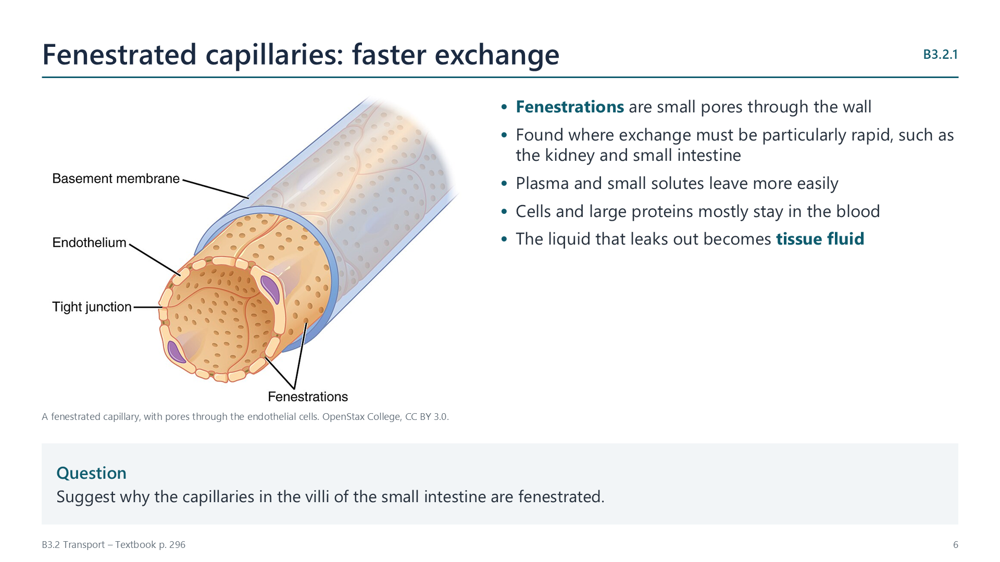

How capillaries are adapted for exchange
p. 296Capillaries are where materials pass between blood and tissue fluid. Each feature helps:
- Branching gives a huge surface area, and no cell is far from a capillary.
- Narrow diameter, about the width of one red blood cell, puts those cells right next to the wall.
- Thin wall, a single layer of endothelial cells, makes the diffusion distance short.
- Fenestrations, or small pores, occur in some capillaries where exchange has to be especially rapid, such as in the kidney and small intestine. Some plasma escapes to form tissue fluid.
Low pressure and slow flow also give more time for exchange.
